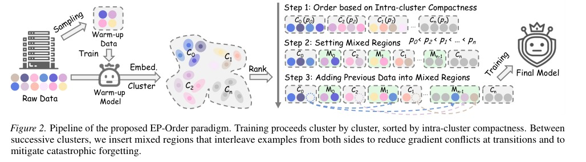

Group-wise Data Ordering: Enhancing Instruction Tuning of Large Language Models via Embedding Proximity
Yiwen Ye, Boyuan Jiang, Xiaobin Hu, Shengzhi Wang, Xiaozhong Ji, Jinghao Lin, Deli Yu, Jiale Chen, Kai Wu, Haihua Yang, Yong Xia
ICML 2026